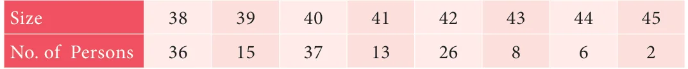
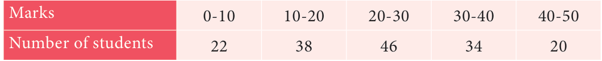

In a distribution, the mean and mode are 66 and 60 respectively. Calculate the median.
Solution
Given, Mean \(= 66\) and Mode \(= 60\).
Using, Mode 3Median - 2Mean
60 3Median \(- 2(66)\)
3 Median 60 +132
Therefore, Median \(\frac{192}{3}\)

- 1.The monthly salary of 10 employees in a factory are given below :
`5000, `7000, `5000, `7000, `8000, `7000, `7000, `8000, `7000, `5000 Find the mean, median and mode.
- 2.Find the mode of the given data : 3.1, 3.2, 3.3, 2.1, 1.3, 3.3, 3.1
- 3.For the data 11, 15, 17, x+1, 19, \(x - 2\), 3 if the mean is 14 , find the value of x. Also find
the mode of the data.
- 4.The demand of track suit of different sizes as obtained by a survey is given below:

Which size is in greater demanded?
- 5.Find the mode of the following data:

- 6.Find the mode of the following distribution: